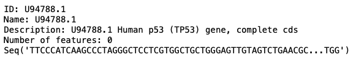
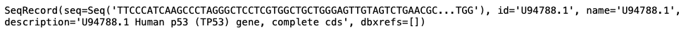
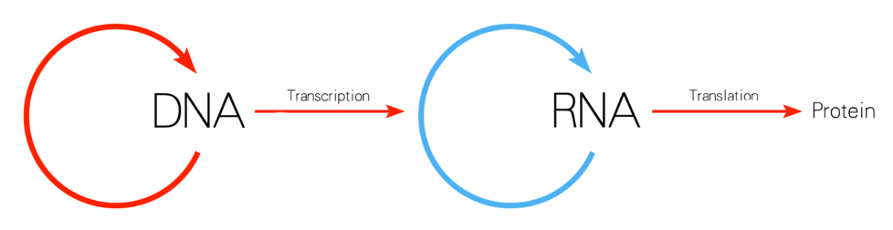
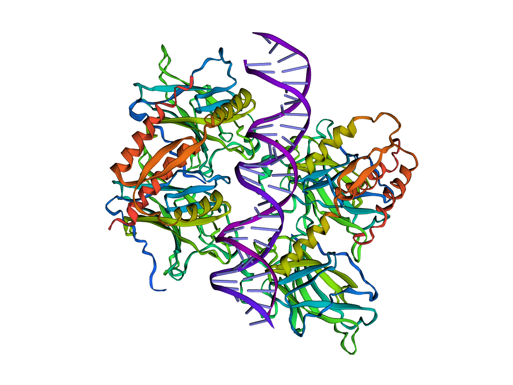

p53 Analysis Using BioPython
The TP53 gene encodes the regulatory protein p53, which serves as an important regulator.
The normal functions of the p53 protein include: the control of cellular growth, regulation
of mitochondrial respiration, and response to cellular stresses that may result in the
transformation of a normal functioning cell into a tumor cell (Matoba et al, 2006; Soussi, T., & Béroud, C. 2019).
Non-functional p53 loses the ability to act as a tumor suppressor, preventing the process of
cell cycle arrest, cell death, and cellular senescence, therefore allowing tumors to form (Suzuki, K., & Matsubara, H., 2011).
Tumors without nonfunctional p53 are extremely rare- the inactivation of this protein is the most
common mutation found in human cancers as cells with the loss of functional p53 are often selected
for by the majority of cancer types (Soussi, T., & Béroud, C. 2019).
Using Python, I will go through the process of displaying the structure of p53 seen below after running DNA and protein analysis.
(Click, drag, and zoom)
from Bio import SeqIO
for record in SeqIO.parse('sequence.fasta', 'fasta'):
print(record)

p53_record = SeqIO.read('sequence.fasta', 'fasta')


p53_dna = p53_record.seq
p53_mRNA = p53_dna.transcribe()
p53_protein = p53_mRNA.translate()
p53_AA = p53_protein.split('*')
p53_AA_clean = [str(seq) for seq in p53_AA]
import pandas as pd
df = pd.DataFrame({'amino_acids':p53_AA_clean})
df['count'] = df['amino_acids'].str.len()
df.head()
from collections import Counter
df.nlargest(10, 'count')
Counter(p53_protein).most_common(10)
import py3Dmol
view = py3Dmol.view(query='pdb:3TS8')
view.setStyle({'cartoon': {'color': 'spectrum'}})
view.png()

References
Bioinformatics, Volume 31, Issue 8, 15 April 2015, Pages 1322–1324,
Matoba, S. (2006). P53 Regulates Mitochondrial Respiration. Science, 312(5780), 1650-1653. doi:10.1126/science.1126863
Soussi, T., & Béroud, C. (2019, February 5). Assessing TP53 status in human tumours to evaluate clinical outcome. Retrieved October 21, 2020, from
Suzuki, K., & Matsubara, H. (2011, June 16). Recent Advances in p53 Research and Cancer Treatment. Retrieved October 21, 2020, from